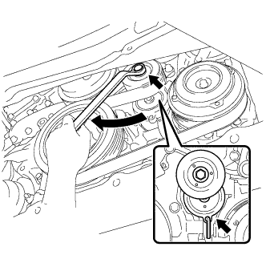
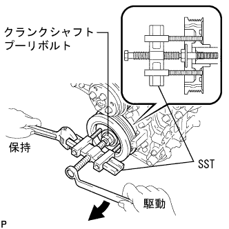
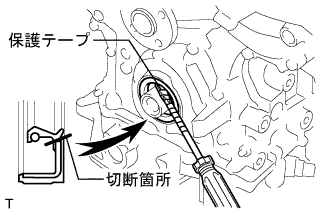

Timing Gear Case or Timing Chain Case Oil Seal (2GR-FE) Removal |
| 1. Remove V-bank Cover Sub-assembly |
 |
Place both hands on the front of the cover and lift it upward to disengage the 2 front clips, then continue lifting upward to disengage the 1 rear clips, and remove the V-bank cover.
| 2. Remove Radiator Upper Air Deflector |
 |
Remove the 9 clips and the radiator upper air deflector.
| 3. Remove Front Tire RH |
| 4. Remove Engine Under Cover Rear RH |
Remove the 5 clips and the engine under cover rear RH.
| 5. Remove Fan & Alternator V Belt |
 |
Put a tool on the pulley set bolt of the tensioner, and turn the tensioner counterclockwise to loosen the tension.
Using a 5mm hexagon wrench, fix the tensioner as shown in the illustration and remove the belt.
| 6. Remove Crankshaft Pulley |
 |
Using SST, hold the crankshaft pulley.
Loosen the crankshaft pulley bolt.
 |
Screw the crankshaft pulley bolt 2-3 threads into the crankshaft.
Using SST, remove the crankshaft pulley.
| 7. Remove Crankshaft Timing Gear Key |
 |
Using a screwdriver, remove the crankshaft timing gear key from the crankshaft.
| 8. Remove Timing Gear Case or Timing Chain Case Oil Seal |
 |
Using a utility knife, cut off the oil seal lip.
Using a screwdriver wrapped with protective tape, pry out the oil seal.